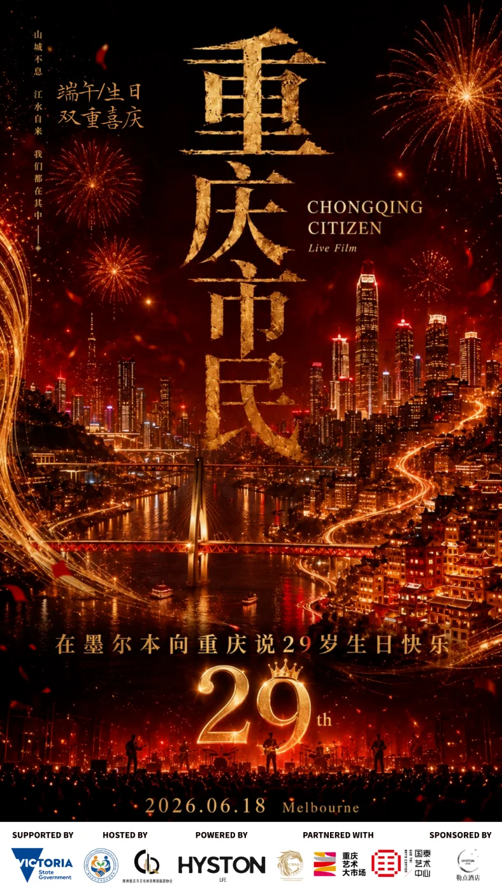
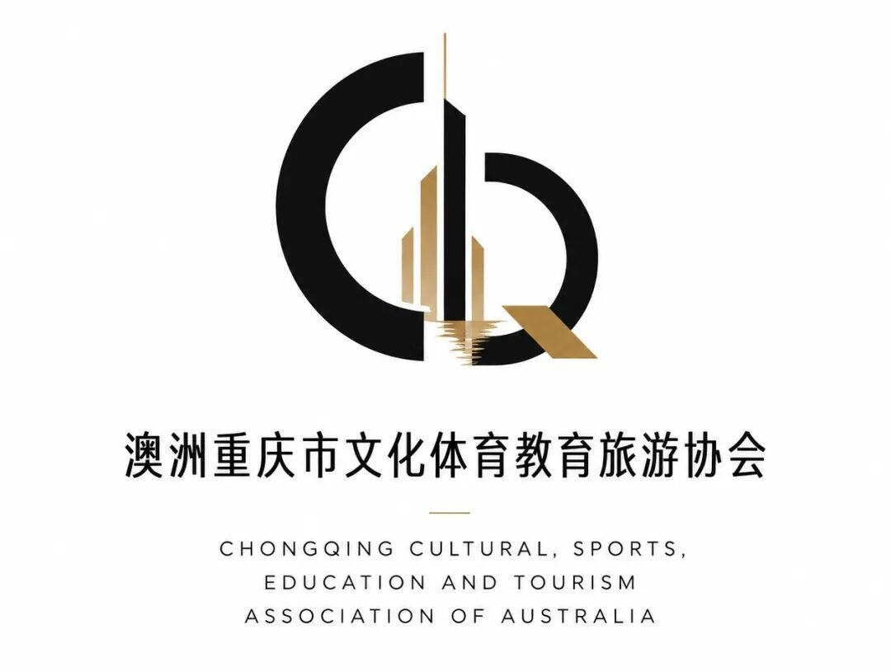

用音乐、影像与艺术讲述重庆：《重庆市民》暨重庆直辖29周年庆祝活动即将登陆墨尔本
《重庆市民》城市音乐 Live Film 将于墨尔本举办

端午逢生辰，山城共此时
从重庆到墨尔本一座城市的声音正在被重新听见
由 澳洲重庆市文化体育教育旅游协会 与 维州多元文化社区促进会 共同主办，HYSTON LIVE 制作的《重庆市民》城市音乐 Live Film 暨重庆直辖29周年庆祝活动，将于 2026年6月18日 在澳大利亚墨尔本 Chinatown Cinema 举办。
本次活动获得 Victoria State Government（澳大利亚维多利亚州州政府） 支持，是一场以重庆城市文化、青年创作、音乐影像、公益行动与中澳多元文化交流为核心的公共文化活动。
2026年6月18日，是重庆直辖29周年的重要日子。适逢端午佳节期间，《重庆市民》将在澳大利亚墨尔本，以音乐、影像、艺术与现场叙事，共同庆祝重庆的城市生日。
端午，是中国人关于家国、江水与团圆的传统节日；重庆直辖纪念日，则是一座山水之城迈向现代城市进程的重要时间坐标。当端午的节日气息与重庆的城市生日在南半球相遇，本次活动也被赋予了更深的文化意义：它不仅是一场音乐与影像现场，更是一份从墨尔本送给重庆的城市祝福。
《重庆市民》不是一场传统意义上的演唱会。
它更像一部现场发生的城市电影。
作品将以音乐 Live Film、重庆城市影像、现场叙事、文化展示、嘉宾交流与公益联动等形式，讲述一个重庆青年从山城走向墨尔本之后，如何重新理解故乡、重新表达城市、重新把重庆唱给世界听见。
活动以“重庆市民”为核心概念，关注的不只是地理意义上的重庆，也包括每一个离开重庆、记得重庆、讲述重庆、仍然与重庆发生连接的人。
我们相信，城市文化的传播，不只发生在旅游宣传片里，也发生在一首歌、一段影像、一句方言、一件艺术作品、一封从山城寄到海外的信里。
本次 Live Film 将分为两个篇章：
上篇：山城来信从重庆寄到墨尔本的一封信
下篇：江水回声离开重庆以后，我才真正理解重庆
从山城来信，到江水回声；从端午佳节，到重庆直辖29周年；从海外相聚，到共同祝福故乡。
《重庆市民》希望通过音乐、影像与现场表演，呈现重庆作为山水之城、移民之城、工业之城、烟火之城与青年之城的多重面貌，也让更多海外观众在真实的个人叙事中，重新认识重庆、理解重庆、靠近重庆。
作为本次活动的共同主办方，澳洲重庆市文化体育教育旅游协会与维州多元文化社区促进会希望通过《重庆市民》，搭建一座连接重庆与澳洲、城市与青年、文化与公益、艺术与现实的桥梁。
这不仅是一场关于重庆的活动。也是一次关于海外重庆人、城市记忆、多元文化与当代青年表达的公开发声。
活动现场还将设置公益板块 《山城她力量计划》，联动合作品牌及社会资源，以实物、产品或服务形式支持长期在重庆山区学校工作的女性教育工作者。
该计划不接受现金形式赞助，不代收捐款。所有物资将由合作品牌或相关单位直接寄送至重庆山区学校，活动方负责项目发起、资源连接、物资清单登记、品牌鸣谢及后续反馈整理。
《重庆市民》希望让重庆不只作为一个地名被看见，也作为一种生活方式、一种精神气质、一种穿越山水与时间的城市记忆，被更多人听见。
活动信息
活动名称：《重庆市民》城市音乐 Live Film 暨重庆直辖29周年庆祝活动Chongqing Citizen City Music Live Film & Celebration of the 29th Anniversary
活动时间：2026年6月18日 11:30 AM – 2:00 PM
活动地点：Chinatown CinemaLevel 1, 200 Bourke St, Melbourne VIC 3000
主办单位 / Co-hosted by澳洲重庆市文化体育教育旅游协会Chongqing Cultural, Sports, Education and Tourism Association of Australia Incorporated
维州多元文化社区促进会Victoria Multicultural Community Promotion Association Inc.
制作单位 / Produced byHYSTON LIVE
支持单位 / Supported byVictoria State Government（澳大利亚维多利亚州州政府）
我们期待在墨尔本，与你一起打开这封来自山城的信。也期待在端午佳节期间，与海外重庆人及多元文化社区共同为重庆直辖29周年送上祝福。
